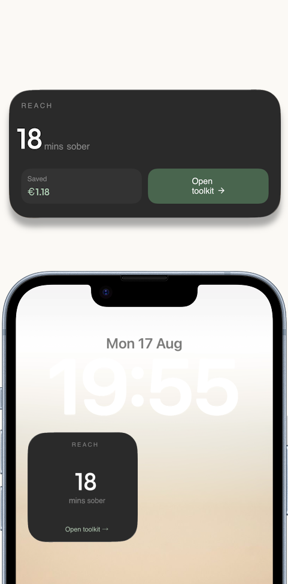
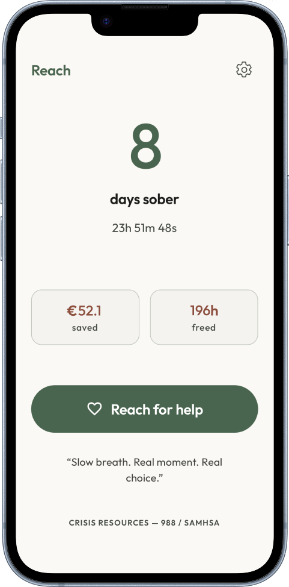
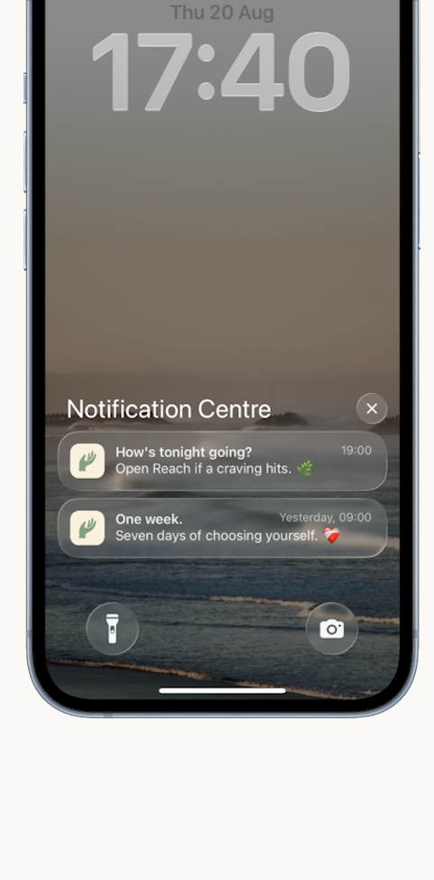

Built for the moment, not the milestone.
A distraction-free toolkit for the fifteen minutes a craving actually lasts. Set up while you’re calm, one tap away when it hits.
Download on the App StoreBuilt from months of r/stopdrinking research
Free 14-day trial. €39.99/year after.
The whole app is the craving moment
Everything else is a day counter. This is what’s there when the counter isn’t enough.



The toolkit
Six things that actually work
Not theory. These came from people in recovery describing what got them through the moment. You set yours up while you’re calm.
-
Reach out
One tap to the person you chose before you needed them. A text or a call, not another screen to disappear into.
-
Play the tape forward
Your brain only shows you the first sip. This shows you the rest of the night. In your own words, written while you were clear-headed.
-
Urge surfing
A craving peaks in about 90 seconds, then it drops on its own. A timer and something to hold onto until it does.
-
Escape plan
The two or three things that actually work for you: something cold in your hand, the kettle on, out the front door. Decided in advance.
-
Never romanticize
The part memory quietly edits out. Kept in your own words, so it’s there when the craving starts making promises.
-
Timer + real action
When the next ten minutes just need to be occupied by something real. No feeds, no scrolling, nothing to hide behind.
Connection is the opposite of addiction.
Have it set up before you need it
A craving is a bad time to start working out what helps. Ten minutes now, while things are quiet.
Download on the App Store